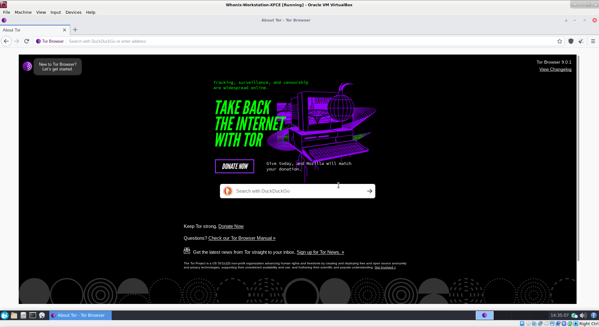

We believe security software like Whonix needs to remain Open Source and independent. Would you help sustain and grow the project? Learn more about our 11 year success story and maybe DONATE!

Dispelling Common Tor Myths and Misconceptions.
Introduction
In modern society a number of untruths persist regarding the Tor network ('dark net'), Tor Browser, and platforms or software that utilize Tor, like Whonix. Myths and misconceptions are perpetuated by a range of factors, including: a lack of understanding, government propaganda, and a heavy media focus on the potential negative applications of Tor. For instance, the media consistently overhypes the existence of markets for illicit services/goods and various criminal activities launched from the network.
This chapter is intended to dispel some of the more common Tor myths, while highlighting that misinformation poses a great disservice to a technologically neutral tool and the millions using it daily. All over the world, Tor users have very diverse and practical reasons for deploying online anonymity. When analyzed dispassionately, it is evident Tor is used predominantly for good -- enforcing our inalienable right to privacy, increasing security, and helping to protect vulnerable groups like whistleblowers, dissidents and activists. On the flipside, Tor/Tor Browser and any other software in existence is imperfect, meaning the 'absolute anonymity' some seek is a mirage.
For a basic understanding of the Tor protocol and how it helps to protect anonymity, see: How HTTPS and Tor Work Together to Protect Your Anonymity and Privacy by the Electronic Frontier Foundation.
Common Tor Myths and Misconceptions
Tor is for criminals who want to disguise illegal transactions from law enforcement!
[1] [2] Tor is predominantly designed for
strong anonymity and helping those who do not want to share their
browsing history, communications and other online activities with
corporations and government entities who perform detailed surveillance
of all Internet traffic. It also assists censored users to access
information freely, journalists to protect their sources, and limits the
risks of corporate espionage. Notably, only around three per cent of all
Tor traffic is on the 'dark web' (.onion sites) -- many
media announcements regarding the scale of hidden services and the
potential for criminality are overstated. kaspersky.com notes:
[3]
But despite the reputation of the dark web as being a haven for criminal activity, a recent survey concluded that only 45% of .onion sites appear to host illegal activity. And it's not as vast as some people have made it out to be. While the surface web hosts billions of different sites, it is estimated that Tor hidden sites number only in the thousands, perhaps tens of thousands but no more.
In simple terms, without Tor, users will be browsing naked and intimately tracked wherever and whenever they go online. Nobody should feel guilty when taking proactive steps to resist network observers, since extremely detailed profiles are created for corporate or intelligence purposes at users' detriment. Furthermore, Tor's advantages are not discounted by the actions of a minority that use it for malign purposes. The fact is the vast majority of Tor traffic is used for legal, legitimate purposes. Banning Tor would only lead to criminals utilizing other tools and methods for nefarious purposes, while denying protection to those in society who need or desire it -- Tor will always be a 'two-edged sword'.
Tor was developed by the U.S. military and State Department, so it cannot protect from U.S. surveillance
[1] [4] Tor was not written by the U.S. government -- Tor was actually written by Roger Dingledine, and later on joined by Nick Matthewson. Initial funding for Tor development was provided by the U.S. Naval research lab via Paul Syverson. The State Department also partially funds Tor since it is used to circumvent censorship in various locations. Notably the proportion of funding from the U.S. government is becoming smaller over time, as more diverse funding options emerge and community financial contributions increase; see Tor Project Sponsors to learn more. [5]
Claims of a purposeful, malicious backdoor are considered extremely speculative, since the software is undoubtedly used by various American agencies and operatives. Backdooring Tor would therefore undermine the security of their own anonymity systems. Moreover, if only government agencies utilized Tor, then it would be rendered useless; all traffic would automatically be tagged as intelligence-related. One fundamental principle of anonymity is: "Anonymity loves company". This means a large and diverse population is essential to make any one individual harder to locate.
Tor code is also thoroughly reviewed and studied by a host of security professionals and world class researchers, and no such backdoor has ever been discovered after around 20 years of development. All Tor Project code is open-source, reproducibly built, and the design and implementation well documented. It is implausible that future Tor developers will purposefully modify source code to enable spying on its users, and not be discovered in the process.
My anonymity is 100 per cent assured with Tor
[1] [6] Tor is not a magical solution providing guaranteed anonymity. All software has flaws in both code and design that provide sophisticated attackers opportunities for exploits. A number of Tor Network Attacks are already well established in the literature, emphasizing that users can be deanonymized under various situations. Also, a host of other potential Speculative Tor Attacks can be launched against the Tor client, servers and/or network.
The Tor software therefore cannot always protect a user's identity, but it can consistently anonymize the origin of Internet traffic. Despite government agency successes in targeting and exploiting some Tor-related traffic, intelligence disclosures have revealed that it was a barrier to mass surveillance at the time of the Snowden disclosures in 2013. Solely using Tor/Tor Browser in isolation will not protect one's identity; it is also necessary to modify online behavior. For example it is essential to use strong encryption, obfuscate writing style, not reveal personal interests, distrust strangers, limit online disclosures, and follow a host of other tips to stay anonymous. Ignoring these rules is a fast track to deanonymization.
Tor is the best solution for people in oppressive regimes
[7] It is certainly debatable whether people living in oppressive regimes should utilize Tor. Aggressive censors and state authorities are highly likely to monitor connections to the Tor network and target those people for more intensive investigation since they are assessed as actively evading state authorities. See also Hide Tor use from the Internet Service Provider.
Tor Browser is highly secure
[7] [8] Some security experts have opined that it is a risky proposition to run Tor Browser because state-level targets are reduced a relatively small set of Firefox versions. While Tor Browser is good for anonymity -- since it creates a large group of homogeneous users -- this is also a security risk, since any critical bugs will affect the entire population.
It is notable that Tor Browser is a modified version of the "extended support release" (ESR) browser. In contrast to release builds that are available approximately every month which patch all identified and resolvable bugs, ESR versions are usually earlier release builds that only patch critical and high security bugs. This means the code base may have publicly patched critical/high bugs that are months old, and medium/low bugs are never patched at all ("forever bugs"; that is until ESR is rebased on a later Firefox build every year or so).
Although The Tor Project is considering basing Tor Browser on the latest Firefox release in the future, [9] [10] the wait might be lengthy. In the meantime, state-level adversaries are highly likely to attack Tor Browser by:
- Monitoring critical/high patched vulnerabilities in less stable channels (Nightly, Beta etc.) and checking whether it is still exploitable in Tor Browser; this exposure might last many weeks.
- Chaining medium/low vulnerabilities together to achieve an exploit like remote code execution; this provides a permanent window of opportunity.
- Attacking other unknown or unpatched Firefox vulnerabilities (since it relies on a huge number of libraries) which may exist for an extended period.
madaidan has also noted that Firefox lacks many security features that are available in other browsers like Chromium. Firstly the sandbox is relatively weak, for example:
- Sandbox escapes in Linux are relatively easy and it can be escaped through common Linux sandbox escape vectors like X11, PulseAudio and so on.
- The seccomp filter is more permissive.
- Dangerous system calls are available in the Windows sandbox.
- Firefox has a much less granular process model.
In addition, many exploit mitigations are missing in Firefox:
- Arbitrary Code Guard (ACG) and Code Integrity Guard (CIG) are not yet available to prevent execution of malicious code following a ROP/JOP chain to transition memory pages to executable.
- Control-Flow Integrity (CFI) has not yet been implemented to prevent code reuse attacks based on Return-Oriented Programmming (ROP) or Jump-Oriented Programming (JOP).
- The JIT engine includes far less mitigations than other browsers. Examples of such missing mitigations include constant blinding or NOP insertion.
- There is no hardened memory allocator. More specifically, mozjemalloc's in-line metadata, weak memory partitioning, lack of guard pages and various other protections make heap exploitation significantly easier.
Despite Tor Browser's various security weaknesses, alternative browsers should not be used in the Whonix platform because this would pose a serious fingerprinting risk. Further, users may be exposed to critical unpatched vulnerabilities in alternatives, [11] while proprietary browsers like Chrome are antithetical to privacy.
All my traffic is encrypted by default
[6] This is a common misconception held by Tor/Tor Browser newcomers. As outlined in the Tor Browser Encryption chapter, a host of data might be visible to different network observers depending on whether the final connection is encrypted with HTTPS or not. Visible data can include: the visited site; location; whether Tor is in use; and via data sharing, the user/password and specific activity data. See: HTTP / HTTPS Connections with and without Tor for further information.
The take home message is that users should try to utilize HTTPS and TLS whenever possible, since Tor only encrypts traffic as it travels through the network of three nodes. Traffic at Exit nodes remains vulnerable if unencrypted, since this is a plain-text version of the message. Even better is use of Onion Services Encryption, since the connection forms a tunnel which is encrypted (end-to-end) using a random rendezvous point within the Tor network; HTTPS is not required. These connections also incorporate perfect forward secrecy (PFS), meaning the compromise of long-term keys does not compromise past session keys.
Tor will get me on a permanent watch list!
[4] In the modern age, everybody is on a watch list. Disclosures have revealed the intent of government agencies is to record all online activity so that highly detailed dossiers are available on the entire population. While it is true that encrypted, VPN, and Tor-related traffic are particularly interesting to the IC, it is better than no anonymity at all. The ultimate solution is for the Tor network and user population to scale up dramatically, in order to increase its effectiveness.
It is far better to stymie mass surveillance measures via Tor as a method of resistance, than to capitulate to undemocratic, police state measures that were secretly implemented without the foreknowledge of the public. Principles should trump hypothetical watchlists, since users in most modern nation states are not exposed to any additional harms by taking this step. One exception might be oppressive states where Tor use is particularly dangerous, but depending on the circumstances, Bridges or pluggable transports might be a reasonable solution.
But Tor exit nodes can manipulate my traffic!
[4] As outlined earlier, this risk is generally
avoided by only using encrypted connections where traffic leaves the
exit node (HTTPS) or using .onion connections that stay
within the Tor network itself. Changing your own online behavior is the
key to staying safe in this case, and refusing to utilize services that
put users at risk by not encrypting traffic to the server.
[12] Manipulation of traffic by malicious exit nodes is
impossible if they do not know what the encrypted HTTPS packets
contain.
But the government sets up lots of Tor nodes to deanonymize people!
[4] [2] Roger Dingledine, co-founder of Tor, has stated:
"Indeed some intelligence agencies have run relays every so often. But, I know two-thirds of the people who run the relays personally. They simply aren't," he said of government snoops.
It doesn't make any sense for the NSA to run relays, he maintains. "They are already watching AT&T, Deutsche Telekom and the cables underneath the oceans. They are already invested in surveilling the internet, so it makes no sense," Dingledine said.
A majority of Tor relay operators are personally known to the Tor organization and there is an active network health team whose task is to root out malicious nodes that attack users or do not declare the true number of related relays. There are protocol proposals to cap the number of unknown relays at a certain percentage to limit the efficacy of sybil attacks. [13] [14] [15] Note that a large number of non-colluding sybil groups have the side-effect of stepping on each other's toes and rendering their attacks less effective while inadvertently adding network capacity.
As mentioned earlier, Tor is not invulnerable. That said, it is difficult to consistently passively deanonymize a large proportion of Tor traffic without significant resource and time investments by adversaries (or a direct, targeted attack on an end user's platform). In most cases, adversaries need to control/observe traffic at both the entry guard and exit node for Confirmation Attacks or perform other types of Traffic Analysis. Lesser adversaries have even fewer opportunities to deanonymize Tor traffic, particularly as the network grows in size. Attacks simply become harder and more expensive to execute.
Tor is illegal to download!
[3] A common misconception is that merely downloading Tor/Tor Browser is either illegal or a sign of criminal activity. Tor is used by a diverse group of everyday people for many legitimate reasons and not just people hiding sketchy activity. It is true that Tor Browser downloads are likely monitored by law enforcement and the IC to mark 'persons of interest', but in nearly all jurisdictions it is legal to download and operate the software itself. [16]
Tor is too slow to stream / torrent over
[17] Tor has greatly improved its throughput over the last few years as the number of (exit) nodes has steadily increased, while the growth in the user population has remained modest. In fact, most streaming can be conducted with few interruptions (including YouTube at the time of writing), and only around half of the available bandwidth is used on average; see the Tor Metrics pages. Torrenting is possible, but not recommended as a single torrent file can equate to several hours of browsing for normal users. Also see: Why is Tor Slow?
If I run a Tor (exit) node I'll be arrested or get in trouble with my ISP!
[17] This is not strictly true. Most people who have received attention from law enforcement or were otherwise harassed decided to run a Tor exit node. There are a number of resources that should be consulted before taking this decision in order to minimize the chances of harassment:
- The Tor Project: So what should I expect if I run an exit relay?
- Tips for Running an Exit Node
- Tor Abuse Templates
- Tor Abuse FAQ
You might also be interested in checking how common Tor use is in your home country before taking this decision, see: the Tor Metrics pages.
Footnotes
- https://www.eff.org/files/2015/11/23/3mod-tor-myths-and-facts_9-10-15.pdf
- https://threatpost.com/tor-developer-busts-myths-announces-new-features/127207/
- https://go.kaspersky.com/rs/802-IJN-240/images/Dark%20Web%2010172017.pdf?aliId=521973948
- https://web.archive.org/web/20190515085807/https://write.privacytools.io/my-thoughts-on-security/slicing-onions-part-1-myth-busting-tor
- The Tor Donor
FAQ notes:
Tor is supported by United States government funding agencies, NGOs, private foundations, research institutions, private companies, and over 20,000 personal donations from people like you. (See our Sponsors Page for more.) While we are grateful for this funding, we don't want the Tor Project to become too dependent on any single source. Crowdfunding allows us to diversify our donor base and is unrestricted -- it allows us to spend the money on the projects we think are most important and respond quickly to changing events.
- https://www.maketecheasier.com/common-myths-about-tor/
- https://medium.com/@thegrugq/tor-and-its-discontents-ef5164845908
- https://madaidans-insecurities.github.io/firefox-chromium.html
- Thoughts
about future Tor Browser plans:
In October we were very excited about the prospect of all Tor Browser platforms following the Firefox Rapid Release schedule. However, in April (now), Android is still the only platform following the rapid release train and Windows, macOS and Linux remain on the extended support release (ESR). As we move closer to the next ESR transition, this year it is beginning at Firefox 91 in May, I am wondering whether we should reverse course and slow down. At this point, we cannot safely transition all platforms onto the rapid release train before October (when 78esr reaches its EOL), so the only option is moving all desktop platforms onto FF91esr and then evaluate migrating onto the rapid release train after that.
- The Tor Browser release schedule for each platform can be found here. It shows Linux Tor Browser will remain on the Firefox ESR branch in the near term.
- In recent history remotely exploitable vulnerabilities remained unpatched in Linux repositories for extended periods for alternative browsers (like Chromium), see: https://forums.whonix.org/t/chromium-browser-for-kicksecure-discussions-not-whonix/10388/82.
- Notably in late-2018, nearly 75 per cent of all Internet traffic was encrypted with HTTPS.
- Malicious operators are regularly removed from the Tor network when discovered. In August 2020, one operator was suspected to be running more than 10 per cent of the Tor network's exit capacity.
- https://nusenu.medium.com/how-malicious-tor-relays-are-exploiting-users-in-2020-part-i-1097575c0cac
- Tor project developers noted:
We have a design proposal for how to improve the situation in a more fundamental way by limiting the total influence from relays we don't "know" to some fraction of the network. Then we would be able to say that by definition we trust at least 50% (or 75%, or whatever threshold we pick) of the network. More details in ticket 40001 and on the tor-relays mailing list thread: here and here.
- Tinpot dictatorships like China and Iran are the exception, rather than the rule.
- https://wiki.debian.org/TorBrowser
Categories: Documentation